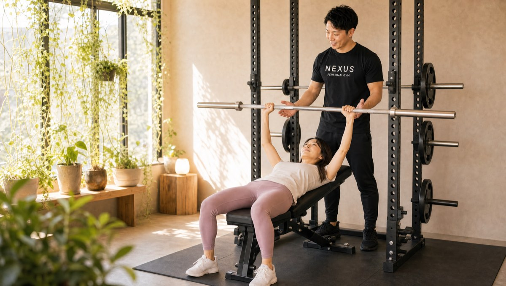
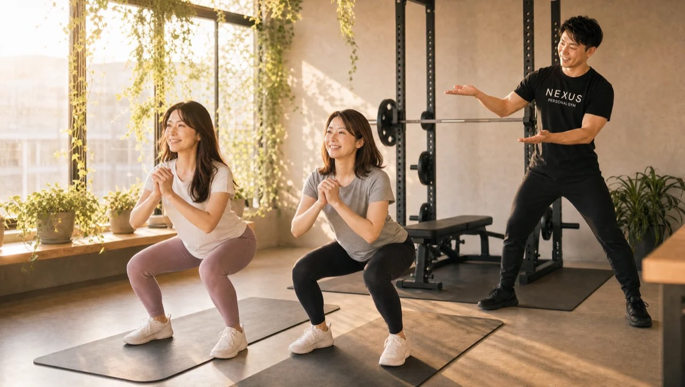
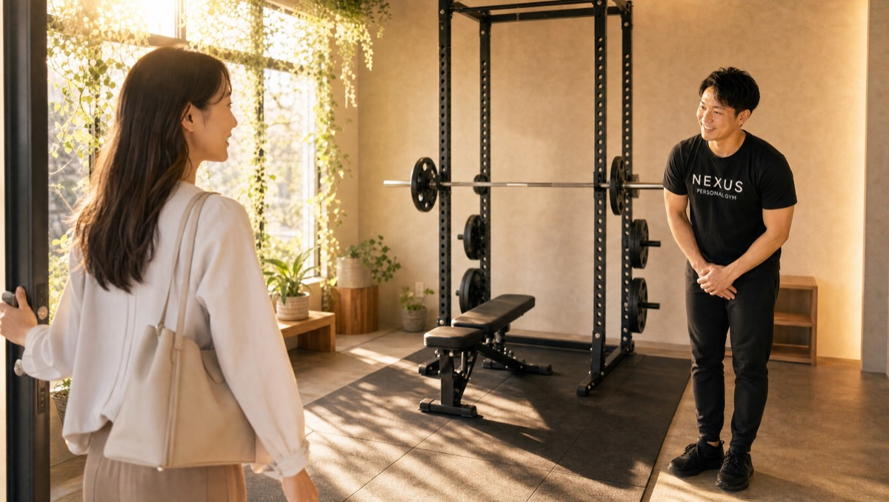

NEXUS Personal Gym ／ 東京都世田谷区
NEXUSパーソナルジム 太子堂店｜記録が残る、本気の指導完全個室ジム

三軒茶屋駅から徒歩圏、閑静な住宅街にある完全個室の隠れ家パーソナルジムです。太子堂店が大切にしているのは「記録が残る、本気の指導」。毎回のトレーニングの重量・回数をトレーナーがノートに細かく記録し、あなたの成長を数字で見える化します。そして、自分で思う限界の2段階先まで、安全に、しかし確実に導く——それが太子堂店の指導スタイルです。大会出場経験のあるトレーナーが在籍し、学生アスリートの競技力向上や親子でのトレーニングにも対応。未消化分は翌月2回まで繰り越せるので、忙しい月があっても1回も無駄になりません。三軒茶屋の喧騒から少し離れた立地で、周囲に気づかれずひっそり通える大人の隠れ家。毎日8:00〜23:00・手ぶらOK・LINE予約で、本気で結果を出したい方に選ばれています。
- 完全個室
- 三軒茶屋から徒歩圏
- 毎回ノート記録
- 限界の2段先へ
- 翌月2回まで繰越
- ★5.0（43件）
この店舗の特徴
NEXUS太子堂店は、三軒茶屋駅から徒歩圏、世田谷区太子堂の閑静な住宅街にある完全個室パーソナルジム。この店舗いちばんの個性は、「記録が残る、本気の指導」です。太子堂店では、毎回のトレーニングの重量・回数・内容をトレーナーがノートに細かく記録します。前回どこまで挙げられたか、どのフォームでつまずいたかがすべて残るので、感覚ではなく数字で成長を追いかけられます。そして指導そのものも本気。会員からは「自分で思う限界の2つくらい先まで確実に誘導してくれる」という声をいただくほど、安全に配慮しながらもしっかり追い込みます。さらに、大会出場経験のあるトレーナーが在籍し、ジャンプ力・体幹・敏捷性といった競技パフォーマンスの向上にも対応。学生アスリート本人はもちろん、親子で通って競技力アップと健康維持を両立する使い方もできます。未消化分は翌月2回まで繰越OKなので、忙しい月も無駄がありません。三軒茶屋にありながら住宅街の中にあるため、周囲にパーソナルジム通いと気づかれにくい隠れ家の雰囲気も魅力。ウェア・タオル・ドリンク・プロテインまで無料提供の手ぶら通いOK、予約はLINEでサッと完結します。Googleマップの口コミは★5.0（43件）と高評価をいただいています。
限界の2段先へ、記録とともに

「自分の限界はここまで」——そう思っている一歩、二歩先に、本当の伸びしろがあります。太子堂店のトレーナーは、あなたが思う限界の2段階先まで、安全に配慮しながら確実に導きます。会員からは「自分で思う限界の2つくらい先まで確実に誘導してくれる」という声をいただいています。とはいえ、ただ闇雲に追い込むわけではありません。太子堂店の指導の土台にあるのは「記録」です。毎回のトレーニングの重量・回数・種目を、トレーナーがノートに細かく記録。前回何kgを何回挙げたか、どこで止まったかがすべて残るので、次回はそのわずか先を狙う——この積み重ねが、着実な成長につながります。会員からも「毎回トレーニングの内容を細かくメモを取ってくれる」「コスパ・タイパも良く、毎週無理なく前向きに取り組める」と好評です。感覚任せではなく、数字で裏づけられた成長。だからこそ、モチベーションが続き、確実に強くなっていきます。本気で身体を変えたい方に、太子堂店の記録に基づく指導はぴったりです。
トレーニングは自分で思う限界の2つくらい先まで確実に誘導してくれます。毎回内容を細かくメモしてくれるので成長が分かりやすく、コスパ・タイパも良いので毎週無理なく前向きに取り組めています。
親子で、競技力を上げる

太子堂店には、大会出場経験のあるトレーナーが在籍しています。だから、ダイエットや体型づくりだけでなく、スポーツをする方の競技パフォーマンス向上にもしっかり対応できます。会員からは「ジャンプ力や体幹、背筋力など細かいオーダーをしていたが、自分に合ったメニューを考えてくれた。今までYouTubeを見ながら自己流でやっていたフォームでは掴めなかったコツがわかり、バレーボールのプレー中も下半身がぶれなくなった」という声をいただいています。ジャンプ力・体幹・敏捷性といった、競技に直結する身体の使い方を、フォームの根本から見直していきます。さらに太子堂店の魅力は、親子で通えること。会員からは「スポーツ少年の息子も一緒に通いたがっている。パフォーマンス向上のために一緒にトレーニングしていきたい」という声も。セミパーソナル（2名）を使えば、お子さまの競技力アップと保護者の方の健康維持を、一緒にリーズナブルに実現できます。完全個室で周りを気にせず自分の課題に集中できるのも、競技に打ち込む方に選ばれる理由です。
ジャンプ力や体幹、背筋力など細かいオーダーに合わせて、私に合った筋トレメニューを考えてくれました。自己流では掴めなかったコツがわかり、バレーボールのプレー中も下半身がぶれなくなったのを実感できています。
月2回まで繰越OK。1回も無駄にしない

「せっかく契約しても、忙しくて通えなかったら回数が無駄になるのでは」——そんな不安を、太子堂店は繰越制度で解消します。その月に消化しきれなかった回数は、翌月に2回まで繰り越すことが可能。仕事の繁忙期や家庭の事情で通えない週があっても、支払った分がしっかり残るので安心です。会員からは「2回までは翌月に繰り越しできるので、忙しく回数をこなせない月があっても安心。1人だとモチベーション的に続かない人にもおすすめ」という声をいただいています。月ごとに予定のムラがある方でも、繰越があるからこそ「今月は行けなかった」で終わらせず、自分のペースで無理なく続けられます。予約・変更はLINEで完結し、6時間前まで無料でキャンセル可能。急な予定変更にも柔軟に対応できます。毎日8:00〜23:00の営業なので、朝でも夜でも、生活リズムに合わせて通えます。「続けられるか不安」という方こそ、この繰越制度のある太子堂店を選んでみてください。
今までジム通いが続かなかったのですが、やりやすい空気を作ってくれるので続けられそうです。2回までは翌月に繰り越しできるので、忙しく回数をこなせない月があっても安心です。1人だと続かない人にはおすすめです。
三軒茶屋の喧騒から離れた住宅街
NEXUS太子堂店は、三軒茶屋駅から徒歩圏にありながら、閑静な住宅街の中にある隠れ家ジムです。会員からは「三軒茶屋にありながら住宅街の中にあるので、周りの方からパーソナルジムに行っているとは思われない。大人の隠れ家ジムのような雰囲気」という声をいただいています。三軒茶屋の賑わいから少し歩くだけで、落ち着いた住宅街の静けさが広がる立地。ジム通いを周囲に知られたくない方、人目を気にせず自分のペースで通いたい方にぴったりです。それでいて店内の設備は本格的で、しっかりトレーニングができる環境が整っています。三軒茶屋・太子堂エリアにお住まいの方、お勤めの方の「ご近所ジム」として、仕事帰りや買い物のついでに立ち寄れるのも魅力です。ウェア・水・タオル・プロテインまですべて無料でご用意しているので、通勤バッグひとつで手ぶらのまま通えます。毎日8:00〜23:00の営業で、朝の出勤前でも、残業で遅くなった夜でも通える時間設定。三軒茶屋・太子堂で「静かに、本気で身体を変えたい」方は、ぜひ一度お越しください。
まずは無料体験から

太子堂店が気になったら、まずは無料体験へお越しください。体験では、カウンセリングであなたの目的や不安、これまでの運動経験をじっくり伺い、姿勢チェックとトレーニング体験を通じて「記録が残る本気の指導」を実際に体感していただけます。会員からは「無料体験を申し込んで雰囲気がとても良かったので、その後も通い続けている」「入会の際も無理な勧誘や高いコースへの加入の勧めがなく、安心して入会できた」という声をいただいています。トレーニング初心者の方も、競技力を上げたいアスリートの方も、親子で通いたい方も、まずは体験でお店の雰囲気とトレーナーの指導を確かめてから、じっくり検討してください。当日入会で入会金が55,000円→15,000円（税込）に割引されますが、その場で契約を迫るような無理な勧誘は一切ありません。手ぶらで来て、鍛えて、帰るだけ。ウェア・タオル・ドリンク・プロテインまですべて無料でご用意しています。三軒茶屋・太子堂で本気のパーソナルジムをお探しの方、ぜひ一度、無料体験にお越しください。
料金プラン
入会金は通常55,000円、無料体験当日入会で15,000円（税込）に割引。未消化分は翌月2回まで繰越可能。全店舗共通の料金です。
アクセス
- 店舗名
- NEXUSパーソナルジム 太子堂店
- 住所
- 〒154-0004
東京都世田谷区太子堂5-6-3 メゾン・ド・太子堂103 - 最寄り駅
- 東急田園都市線・世田谷線 三軒茶屋駅（徒歩圏）
- 営業時間
- 毎日 8:00〜23:00
- 電話番号
- 050-1790-8488
Googleマップの口コミ
出典：Google マップ
NEXUS太子堂店はGoogle口コミ43件で★5.0を維持。毎回の重量・回数をノートに記録し、限界の2段階先まで導く本気の指導が評価されています。大会出場経験のあるトレーナーによる競技力向上や親子トレーニング、未消化分を翌月2回まで繰り越せる続けやすさも支持され、三軒茶屋の住宅街にひっそり佇む大人の隠れ家ジムです。
三軒茶屋にありながら住宅街の中にあるので、周りの方からパーソナルジムに行っているとは思われません。大人の隠れ家ジムのような雰囲気で、店内はしっかりトレーニングできる設備が整っています。
太子堂店のよくある質問
Q三軒茶屋・太子堂で本格的な指導のパーソナルジムはありますか？+
Q学生アスリートのトレーニングもできますか？+
Q予約を消化できない月があっても大丈夫ですか？+
よくある質問（全店共通）
料金・制度などNEXUS全店に共通するご質問です。さらに詳しくは110問のFAQをご覧ください。
Q料金はいくらですか？+
Q手ぶらで通えますか？+
Qキャンセルはいつまでできますか？+
Q食事指導はありますか？+
Qトレーナーはどんな人ですか？+
Q女性会員は多いですか？+
Q体験の流れは？+
NEXUSパーソナルジムの特徴・料金をもっと見る